Nginx反向代理
- 正向代理，例如Proxy、VPN，我透過它去訪問別人。例如我暗戀班上正妹但不敢講，拜託正妹的閨密轉交情書，正妹只知道情書來自閨密轉交但不知道是誰送的(除非閨密把我賣了)
- 閨密對我而言就是正向代理(前向代理)
- 反向代理，例如某殺手組織內有多個專業殺手，跟一個對外的業務窗口。當委託人想下任務只能找到窗口，而組織內的任務實際由哪位殺手完成外人無從得知。委託人最終只知道任務的結果
- 窗口對於殺手組織而言就是反向代理
- 目的: 負載均衡、安全(對外只暴露一個IP，內部伺服器真實網址別人不知道)
模擬部署
- 首先docker拉一個nginx，並且把設定檔文件夾掛載出來，方便修改
- 乍看有點混亂，
nginx.conf是主配置檔 - 而
conf.d是子資料夾，裡面可以放多個xxx.conf，為從配置 - 第三個掛載是為了放html靜態資源
- 最後一個是log
- 乍看有點混亂，
docker run -p 80:80 --name nginx -v /mydata/nginx/nginx.conf:/etc/nginx/nginx.conf -v /mydata/nginx/conf.d:/etc/nginx/conf.d -v /mydata/nginx/html:/usr/share/nginx/html -v /mydata/nginx/logs:/var/log/nginx -d nginx
- 為了模擬DNS的效果，用SwitchHosts修改本機
- SwitchHosts: https://github.com/oldj/SwitchHosts/releases
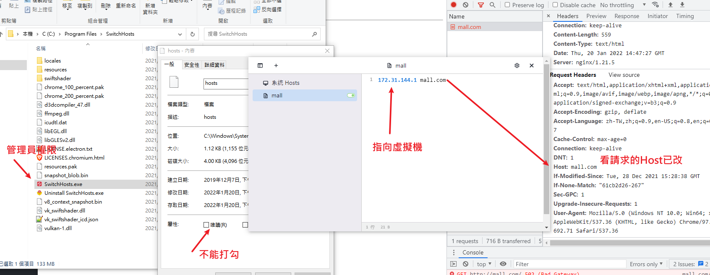
- 進到虛擬機，修改nginx轉發的規則，讓它指向本機IP
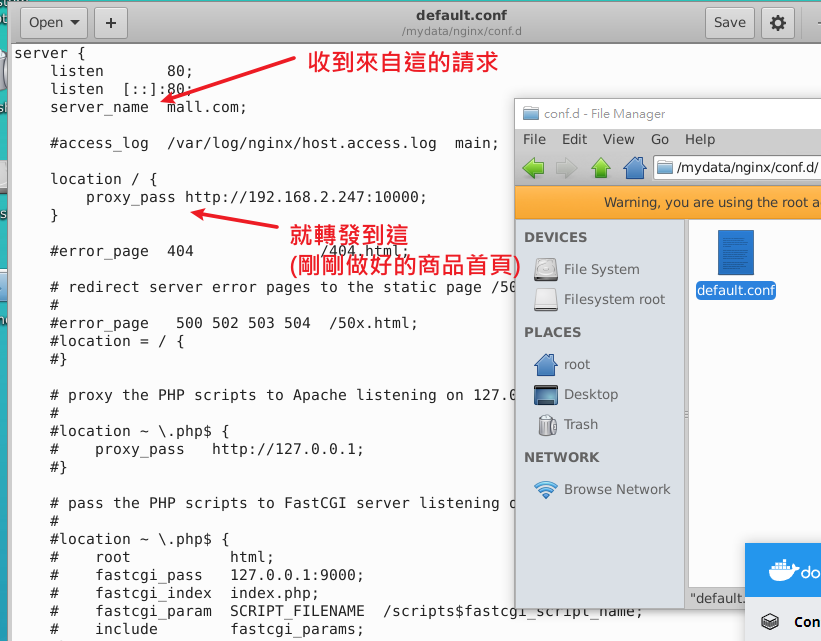
- 把服務都開起來，有點樣子了
- 其實目前只是繞一圈回來，接著再來設定網關
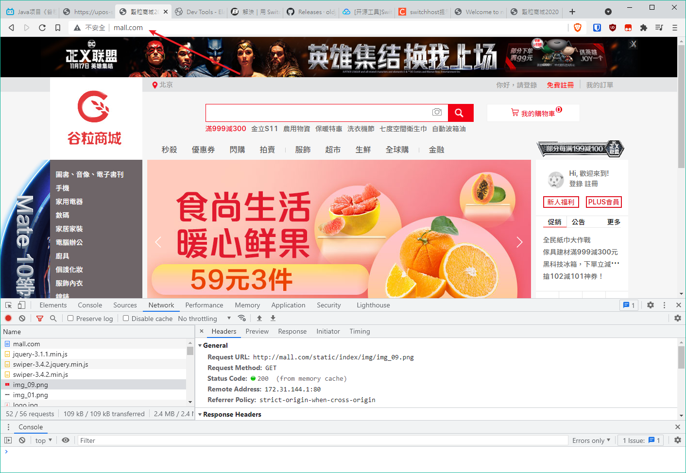
結合網關
- 大的HTTP
- 使用nginx注意
{}閉合與結尾的;
- 使用nginx注意
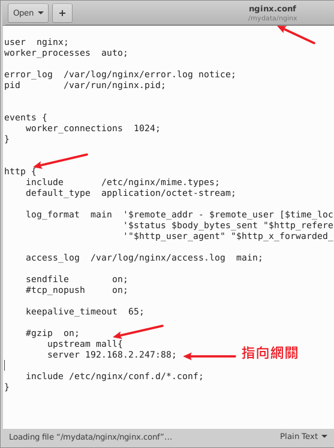
- 小的Server
- 通過nginx的時候，會把請求頭裡面很多訊息都削掉
- 所以這邊要手動把頭加回去，否則下面的網關沒辦法靠
Host=XX來辨識斷言 - 把檔案名稱保存為
mall.conf
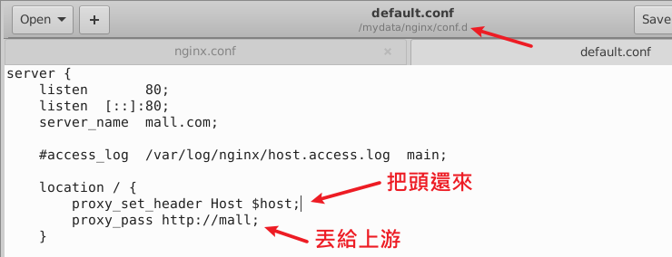
- 網關
- id: mall_host_route
uri: lb://product
predicates:
- Host=**.mall.com,mall.com
域名映射最終效果
- 訪問
mall.com透過DNS(假的，現在通過改HOST充當)轉到server對外唯一地址(虛擬機的IP) - nginx作為看門保全，把人帶給服務台(網關)，並且這個保全預設會把客人的頭砍了，要設定讓它把頭還回來
- 到了網關識別客人的host來自
mall.com，預設轉發到商品首頁 - 內部的API請求也一樣，只要域名滿足條件，都可以透過nginx反向代理給網關，網關再負載均衡給各個微服務子模組
壓力測試
- 找出系統負荷的瓶頸
- 不測不知道:
- 記憶體流失(memory leak): 小問題透過大累積才出現
- 併發: 單機OK，多人play就出事
指標
TPS: Transactions Per Second，每秒處理的事務數目，注意不是指資料庫的那個交易，而是指用戶幹了一件"事"，用來衡量整個業務流程，單位是筆/秒QPS: Queries Per Second，每秒能處理查詢數目，通常用來衡量接口API的訪問量，單位是次/秒RT: Response Time，響應時間，用戶發出請求到系統做出反應的間隔，通常會關注90%響應時間，避免考慮極端情況吞吐量: 處理量，系統每秒能處裡的請求數、任務數錯誤率: 顧名思義，一批請求中的錯誤比例
壓測工具JMeter
- 官方下載: https://jmeter.apache.org/download_jmeter.cgi
- 解壓即用，有親切的中文可選
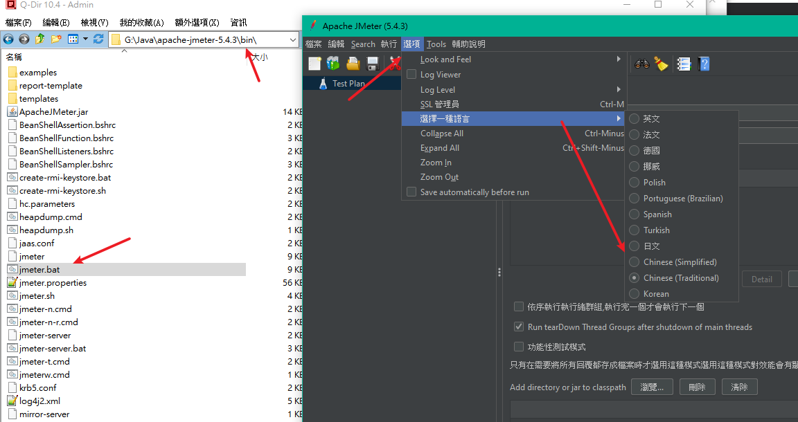
- 添加測試
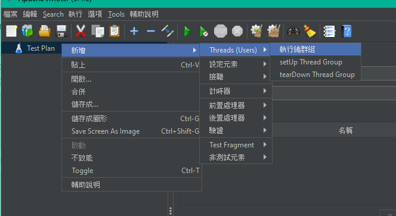
- 設定執行緒跟次數，例如200*100就總共會是2W次請求
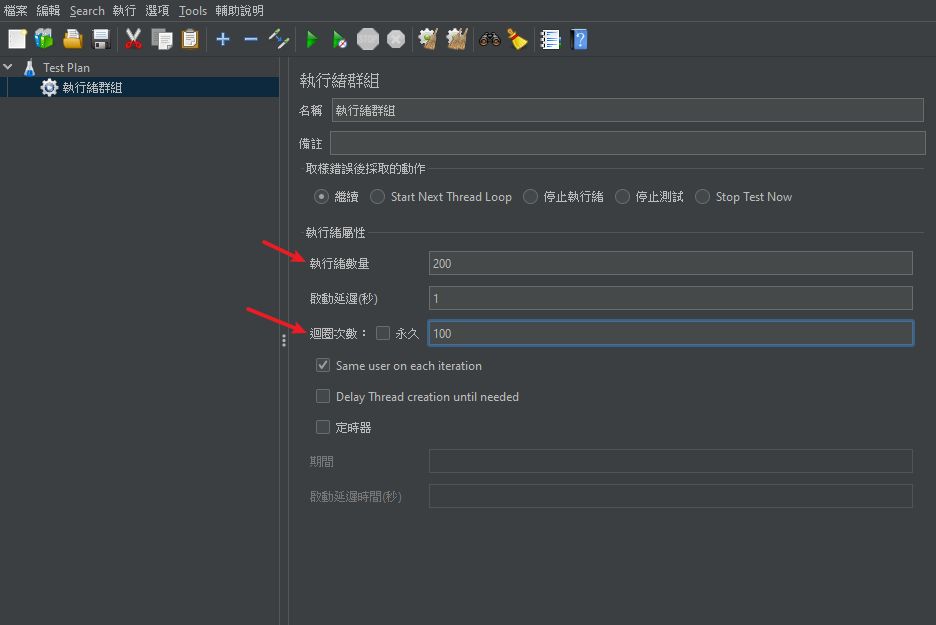
- 添加請求，例如最基本的HTTP請求
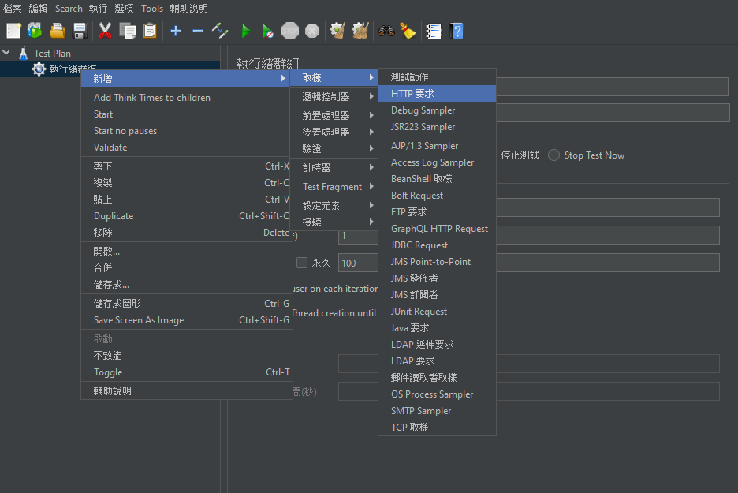
- 添加接聽(結果報表)，有各種圖表可以看
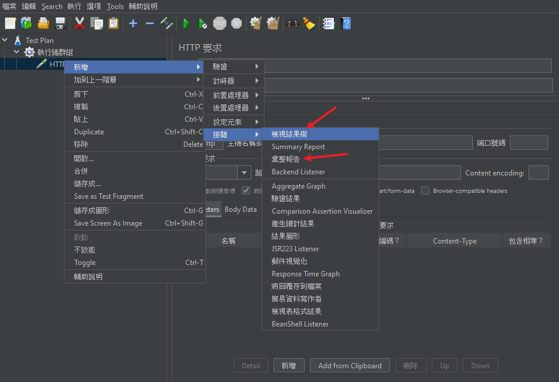
- 就可以開測了，它會要你先保存，測完看完可以按掃把清空
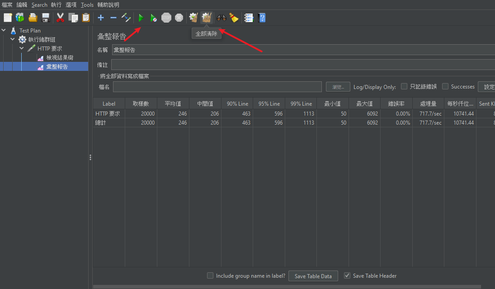
- 測了一下自己的，不意外的超爛XD
Address already in use問題解決
我是沒遇到，但還是紀錄一下
-
簡單說就是舊版windows提供的TCP/IP連接埠太少，改多就好了
-
參考: https://www.bilibili.com/video/BV1np4y1C7Yf?p=143&spm_id_from=pageDriver
優化
-
想要讓程式性能優化有幾個大方向:
-
資料庫
-
程式本體、業務邏輯
-
中間件(例如tomcat、Nginx)
-
IO(例如硬碟讀取、網路頻寬)
-
操作系統
-
-
要先認清程式屬於CPU密集還是IO密集，才能對症下藥
-
就程式本體來說，想優化需要先了解JVM的記憶體模型，筆記連結:
-
了解JVM與GC，最直接的優化目標就是減少FullGC次數
JVM監控
- 工具: jconsole與jvisualvm，後者是加強升級版
- 直接cmd，jvisualvm就能執行
- 安裝Visual GC插件，如果有問題要去設定插件中心版本與下載網址
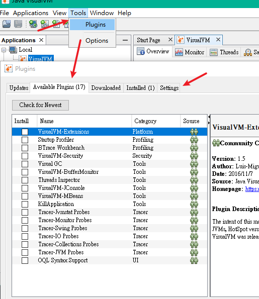
- docker開啟監控
docker stats - JMeter不要開太多執行緒，50~100先試試，我剛剛開500個直接把WSL虛擬機搞死了
測試紀錄
- 做一個簡單的表格統計各環節的吞吐量(Throughput，TP)、90%響應時間與CPU使用率、壓力點
| TP(/sec) | 90% Line(ms) | CPU(%) | 瓶頸 | |
|---|---|---|---|---|
| nginx | 1000 | 54 | 80 | CPU |
| Gateway | 17000 | 5 | 100 | CPU |
| 簡單服務 | 22000 | 6 | 60 | |
| 簡單服務+Gateway | 7400 | 13 | 25 | 網路IO |
| 全鏈路+首頁 | 220 | 242 | 10 | DB、thymeleaf |
| 全鏈路+三級分類 | 116 | 466 | 25 | DB |
| 首頁全量資源 | 4 | 471 | 5 | 靜態資源 |
測nginx
-
由於是開在WSL虛擬機的docker desktop，效率比正常還低
-
發現nginx只占用CPU，因為它就負責轉發，幾乎不吃RAM
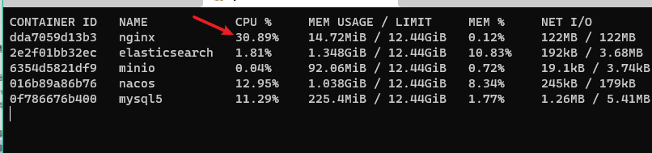
測Gateway
- 測http://localhost:88/
- TP大概17737.7，發現也是爆吃CPU
- RAM因為之前啟動-Xmx100m限制了，GC也清蠻多次的
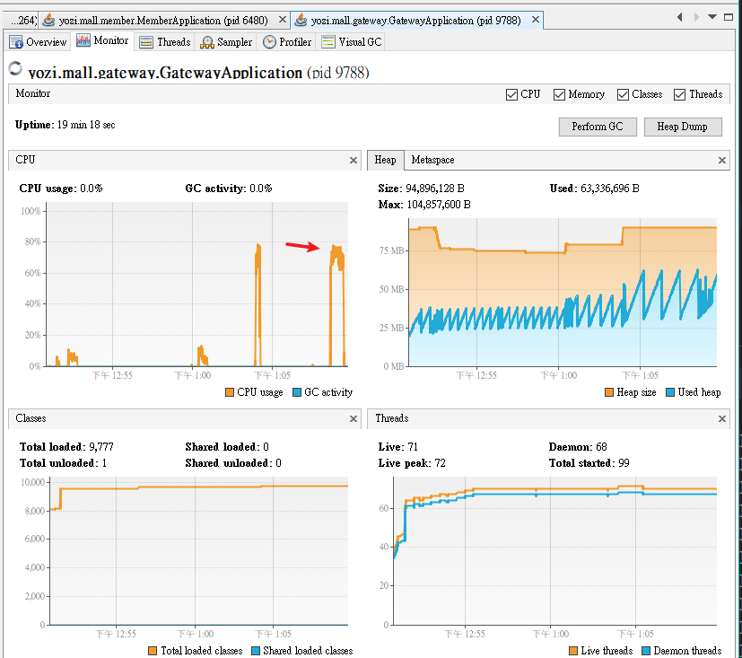
測簡單服務
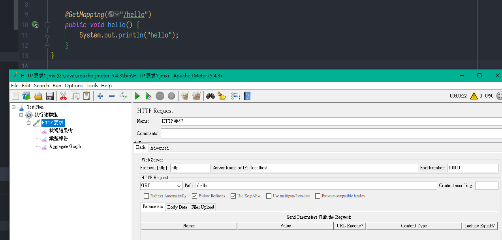
- 結果: 很勇嘛，比網關還結實
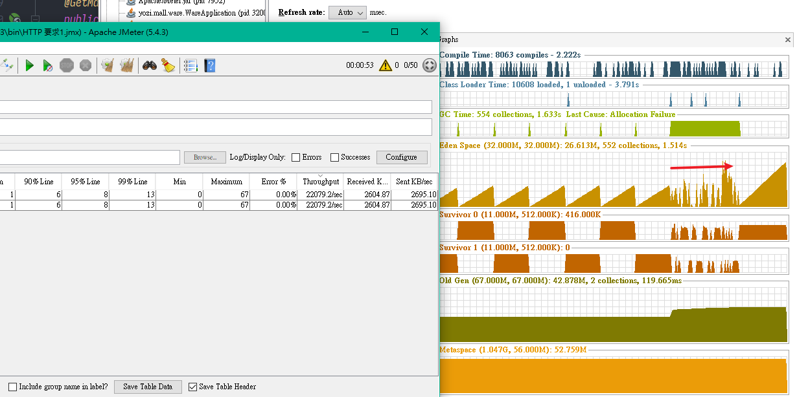
- 簡單服務+網關
- 接著搭配網關，增加一個轉發的規則即可
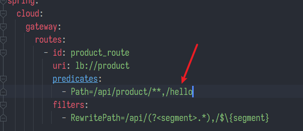
- 結果:
- 顯然中間件越多，響應時間就拉長
- 但是吞吐量低了，CPU占用也小了
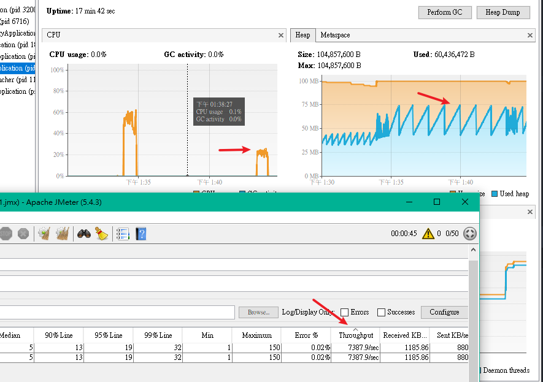
全鏈路
-
即完整的訪問mall.com，透過nginx到網關再到商品首頁
- 包括頁面渲染與SQL查資料庫
-
結果: 直接悲劇，目前我的瓶頸可能是在DB
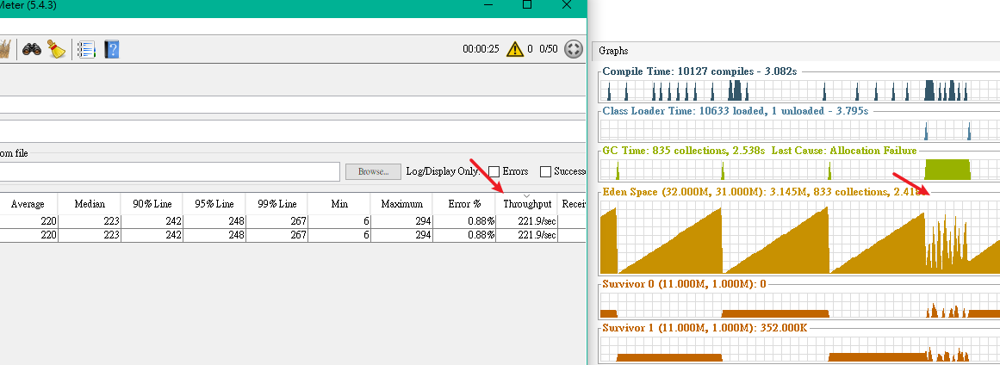
- 還可以到進階設定，把包含資源打勾，旁邊限制並行下載最好也勾，不然容易卡死
- 這個勾上TP剩4，顯然還要傳圖片那些靜態資源會對web容器(tomcat)壓力大增

- 全鏈路+三級分類
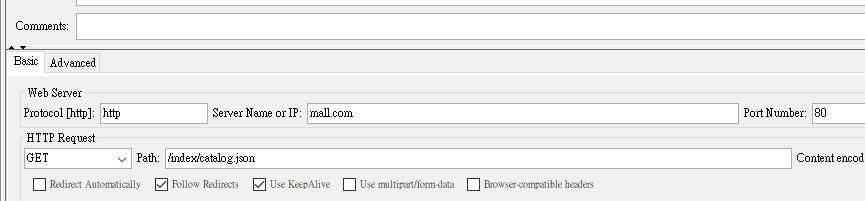
- 結果:
- 本身三級分類是個重複查SQL的動作，從資料庫拿太多東西了，可以看到每秒接收8MB的資料，在那邊卡很久
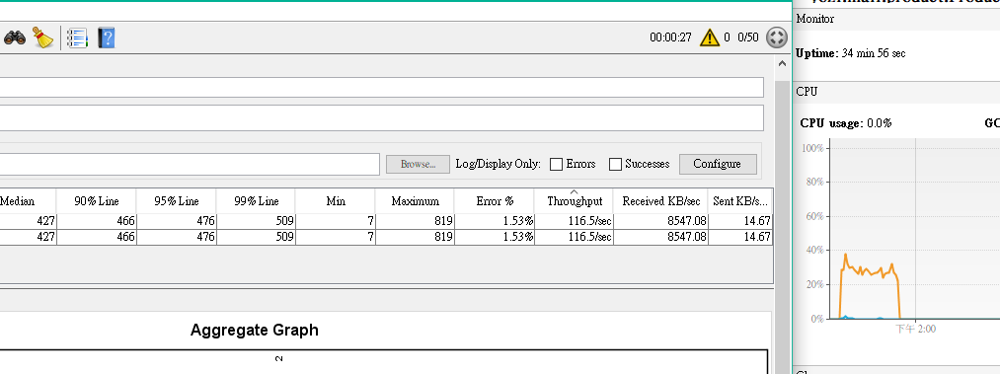
- 老師示範的TP只有2，肯定是為了示範循環查庫的次數太多，我自己寫當初就有些優化，盡量減少循環查表的動作，能批次的就批次，所以還好一點，看來接下來就是要改這個
小結
- 網路方面，中間件越多損失越大，但網路IO交互一般來說1萬吞吐沒問題，暫時不會接觸到這些
- 業務方面主要是卡在DB與資源，以下開始檢討
改進措施
改一項可以試一項看看提升幅度，我就不一一記錄了
-
模板的渲染速度: 之前為了發開測試，把thymeleaf快取給關了
spring.thymeleaf.cache=false，打開大概還能有10%提升 -
日記記錄的級別，以前用info全記，也會稍微影響

DB
-
一樣可以關掉沒用的日記記錄級別
-
MySQL優化
- 把常查的欄位(涉及where 及 order by)加上索引，可以有效提升查詢速度
- 但也不是越多越好，索引多會使insert跟update變慢
- 避免用Null判斷，用null會導致放棄索引而進行全表掃描，寧可用1或0這種
- 避免使用
!=查表，理由同上 in和not in也要慎用，能用between或exists代替
- 把常查的欄位(涉及where 及 order by)加上索引，可以有效提升查詢速度
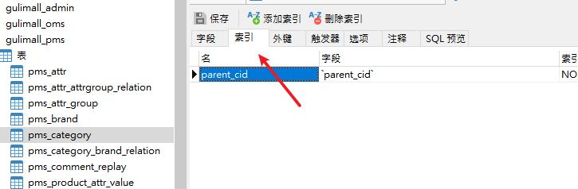
- 查DB的業務邏輯是重點
- DB能一次查盡量一次查完，避免循環查表，麻煩的封裝交給java來處理
資源動靜分離
- 把靜態資源丟給nginx讓他負責直接返回給用戶，而不是在tomcat這邊又要動又要靜、疲於奔命。分開後可以有效提升資源訪問效率，並且解放湯姆貓
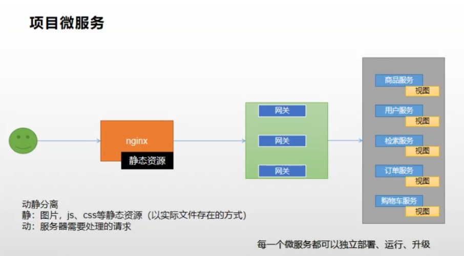
- 把
static資料夾丟到linux的/mydata/nginx/html/之下- 用WSL的話打開終端預設就在C槽我的文件，可以直接拷貝走
- 但要注意有些文件如果在windows打開過，空格或其他編碼問題在linux容易報錯
- 修改nginx server規則，注意Location規則嚴格的放在上面
- 注意
default.conf有沒有location也是/開頭攔截規則的，我在這邊除錯好久才想到是之前做測試設定的蓋到
- 注意
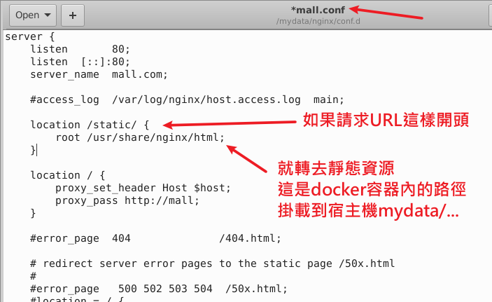
- docker啟動nginx的時候掛載是這樣
-v /mydata/nginx/html:/usr/share/nginx/html
-
所以容器內/usr/share/nginx/html下也會看到
static資料夾 -
把模板下
index.html那些的URL都加上/static/打頭就能正常訪問了
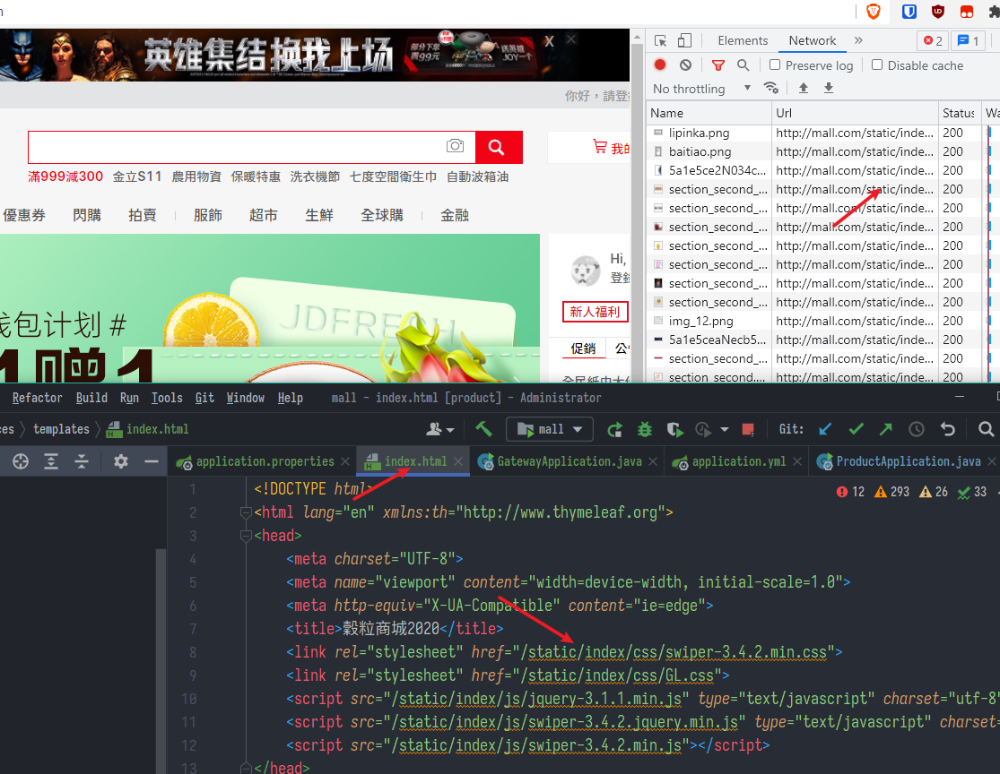
整理資源訪問流程
繞得有點多圈，理一下思緒
- 現在nginx發揮的功用: 誰從
server_name=mall.com來訪問，我就把你丟給網關(windows主機IP:88) - 網關一看是
mall.com就轉發給product服務 product服務的IndexController抓{"/", "index.html"}的URL，把你導到thymeleaf渲染的首頁模板index.htmlindex.html裡面請求訪問http://mall.com/static/xxxx的靜態資源，又被nginx攔截，直接從nginx所在容器返回給使用者
Heap大小管理
-
之前為了多開服務，在每個服務VM設定那邊調過-Xmx100m
-
-Xmx最大堆可用 -
-Xms初始堆，如果配最大=最小，那每次GC完JVM就不會重新分配記憶體，也有點提升 -
-Xmn年輕代，整個堆=年輕代 + 年老代 + 持久代，持久代一般固定大小為64m，所以年輕代增加就會擠壓年老代的空間 -
-Xss每個執行緒的堆棧大小，預設是1M
-
-
記憶體崩潰: 堆全部佔滿，GC持續運行但無法完成，直到程式控制台開始報錯OOM
-
適當加大記憶體，減少FULL GC次數，也可以有提升
-
另外可以看到同樣預設情況下JDK11的GC效率比JDK8還強一點，看來改版還是有長進的
…下章繼續，緩存與分佈式鎖
上次修改於 2022-01-27